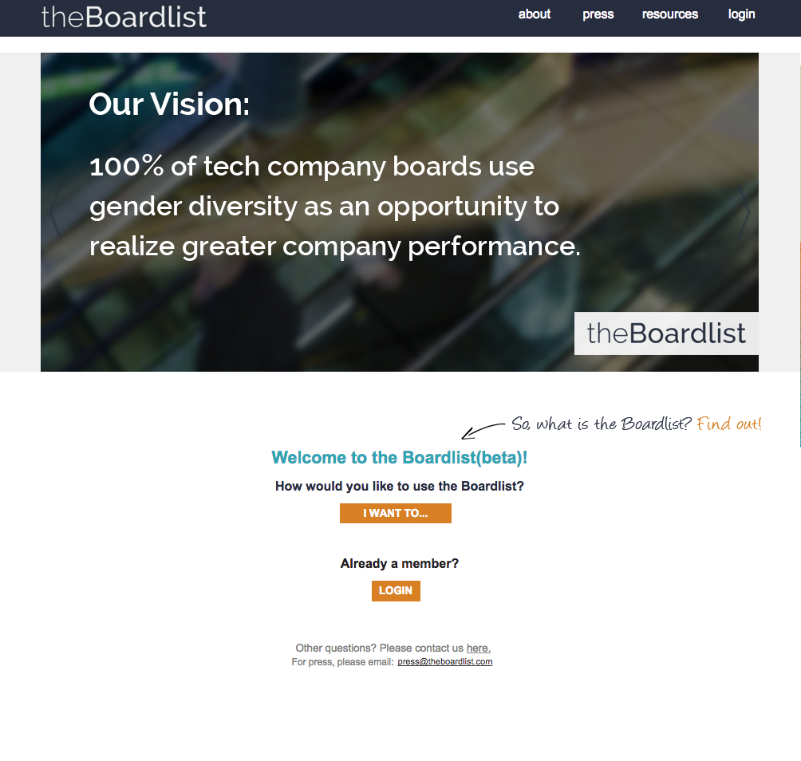

They are CEOs, investors and board members of companies who want to fill vacant board seats with female leaders. They want to do this because companies with board diversity tend to have greater performance.
Today most board seats are filled through network referrals, which limit the pool of expertise available. Leaders are busy and do not have the time to invest in the research required to find high quality candidates. They need a tool that facilitates discovery.
Design a tool to help business leaders find qualified women for their board.
Makes it easy to refer and find candidates
Creates a warm inclusive environment
Educate and bring awareness.
The first live version of theBoardlist was a site that the founders put together themselves as a proof of concept. The need proven, it was ready for brand and user experience refinement.

Business leaders are more likely to try out and trust a polished-looking site. Photography, colors and text were carefully chosen to feel warm inviting and avoid seeming preachy.
The nomination part of the tool needed to allow for friction-free referrals of multiple members.
The board search part of the tool was designed to filter top candidates and allow for quick scanning.
Candidate profiles surface relevant information.
Shareable infographics spread the message